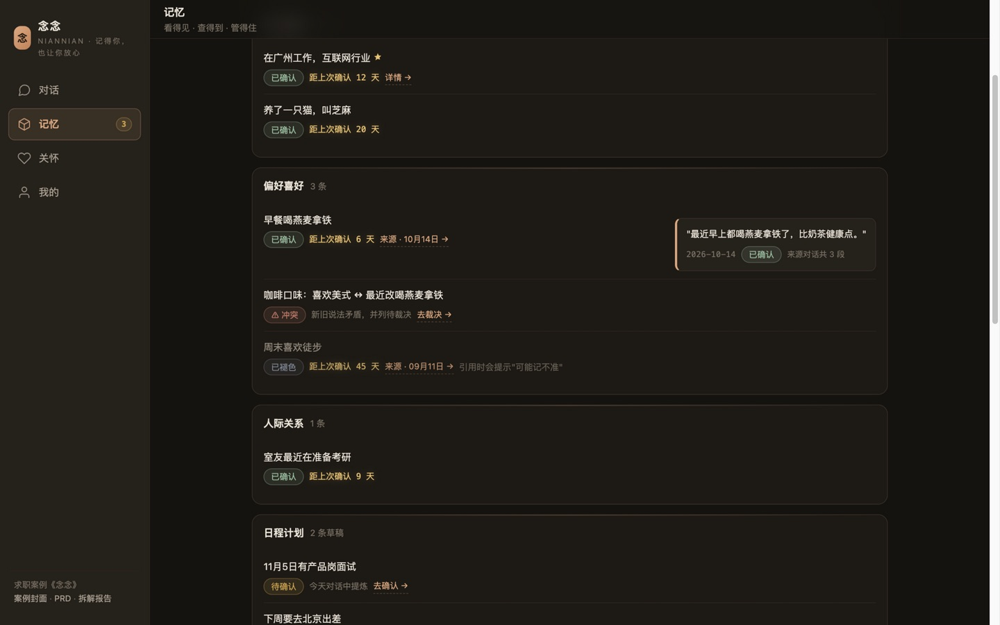
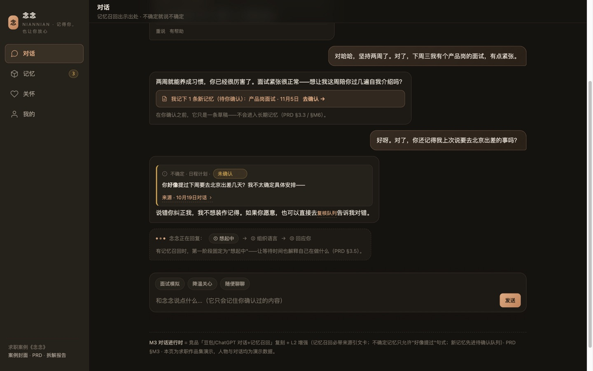
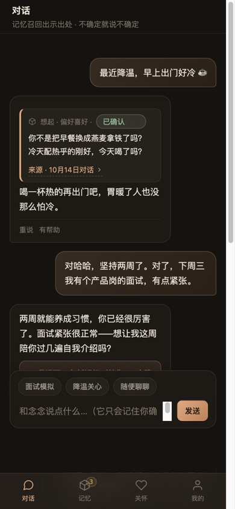

完整案例 · 五件套C 端 AI 对话体验
念念 — 记忆透明的 AI 陪伴助理
所有 AI 陪伴产品的记忆都是黑盒：用户最痛的失忆、记错、失控没人管。念念把记忆做成看得见、查得到、管得住：每条记忆带来源、先确认后入库、如实褪色、主动关怀有账本有边界。Slogan：记得你，也让你放心。
01为什么做它：真实用户在痛什么
先做二手 VoC：把 Reddit、OpenAI 官方社区、WSJ、豆包 App Store 差评、Kimi GitHub issue 等真实用户抱怨编码成六个主题，11 组来源逐条可查——调研不是装饰，是案例的第一件证据。
| 主题 | 真实原声（节选） | 念念的回应模块 |
|---|---|---|
| 失忆（被动丢失） | "Why do AI companions still forget everything?"（Reddit） | 褪色可视化 · 诚实降级话术 |
| 记错且屡教不改 | WSJ：记忆"卡在过时的信息上" | 先确认后入库 · 冲突裁决 |
| 失控感 | 用户因不适关闭 ChatGPT 记忆（Every 专栏） | 三步授权 · 暂停≠删除 |
| 静默丢失 | OpenAI 社区：架构更新后记忆静默消失 | 记忆账本 · 24h 生效承诺 |
完整编码表与 11 组来源见 00-用户之声与调研设计（内含可直接执行的 8 人访谈包；一手结果刻意保持空态——研究纪律是作品的一部分）。
02打法：L1 立住基本盘，L2/L3 打进黑盒
对豆包、ChatGPT、星野、Replika、Pi 五家做公开材料取证（弱点表 W1–W7），收敛出竞品共同空白：记忆的黑盒性。然后三层策略——L1 复刻对齐已验证需求；L2 注入"可验证的信任"（来源引文卡、口径角标、复核流）；L3 做竞品短期抄不走的机制（褪色、冲突裁决、关怀账本）。
用户之声 T1–T6→
竞品弱点 W1–W7→
L1 复刻→
L2 信任内核→
L3 难抄机制→
PRD M1–M9→
10 页原型

03体验亮点


每页页脚自带"= 竞品某板块复刻 + 增强点"标注——原型自己会讲设计理由，面试官翻到任何一页都能就地看到决策依据。全部页面通过双端渲染体检（1440/390 无溢出、交互程序化验证、视觉模型质检）。